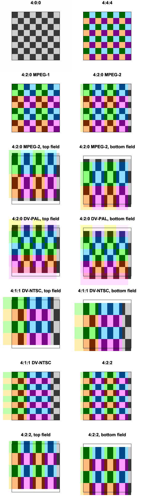

| Authors: | Firesledge (aka Cretindesalpes) | |
| Version: | r25 | |
| Download: | http://ldesoras.free.fr/prod.html | |
| Category: | Format tools | |
| Requirements: | Vapoursynth or Avisynth+ 3.7.0 | |
| License: | WTFPL |
Fmtconv is a format-conversion plug-in for the Vapoursynth and Avisynth+ video processing engines. It does:
It supports:
Fmtconv is focussed primarily on quality and exactness rather than execution speed. This does not mean it is slow or unoptimized, but fmtconv is clearly not on par with the fastest equivalent 8-bit filters.
Using the Python 3.8 interface (or a higher version, it depends on your Vapoursynth version):
import vapoursynth as vs core = vs.get_core () core.std.LoadPlugin (path=r'C:\path\fmtconv.dll')
Of course you can avoid the LoadPlugin command by copying the
plug-in file to the autoloading directory.
Check the Vapoursynth manual for more information.
Requires FFmpegSource2:
# Load Vapoursynth import vapoursynth as vs core = vs.get_core () # Load the plug-ins core.std.LoadPlugin (path=r'C:\path\fmtconv.dll') core.std.LoadPlugin (path=r'C:\path\ffms2.dll') # Load the video clip into c using FFmpegSource c = core.ffms2.Source (source=r'C:\path\video.mkv') # Change the resolution. The output clip is now in 16 bits. c = core.fmtc.resample (clip=c, w=1280, h=720) # Dither the result, back to 8 bits c = core.fmtc.bitdepth (clip=c, bits=8) # Send the processed clip to the calling process c.set_output ()
Simple resize with 16- or 32-bit output:
c = core.fmtc.resample (clip=c, w=1280, h=720)
Bobbing an interlaced stream (here, Top Field First):
c = core.std.SeparateFields (clip=c, tff=True) c = core.fmtc.resample (clip=c, scalev=2, kernel="cubic", interlaced=True, interlacedd=False)
Converting a progressive stream from YUV 4:2:2 to 4:2:0 and back to 8 bits:
c = core.fmtc.resample (clip=c, css="420") c = core.fmtc.bitdepth (clip=c, bits=8)
Same as above, with interlaced content:
tff = True c = core.std.SeparateFields (clip=c, tff=tff) c = core.fmtc.resample (clip=c, css="420", interlaced=True) c = core.fmtc.bitdepth (clip=c, bits=8) c = core.std.DoubleWeave (clip=c, tff=tff) c = core.std.SelectEvery (clip=c, cycle=2, offsets=0)
Y’Cb’Cr’ 4:2:0 to R’G’B’:
c = core.fmtc.resample (clip=c, css="444") c = core.fmtc.matrix (clip=c, mat="601", col_fam=vs.RGB) c = core.fmtc.bitdepth (clip=c, bits=8)
R’G’B’ to Y’Cb’Cr’ 4:2:0:
c = core.fmtc.matrix (clip=c, mat="601", col_fam=vs.YUV, bits=16) c = core.fmtc.resample (clip=c, css="420") c = core.fmtc.bitdepth (clip=c, bits=8)
Y’Cb’Cr colormatrix conversion from BT. 601 to BT. 709.
For example to insert a PAL DVD content into an HDTV stream.
Note that we need to convert the clip to 4:4:4 in an intermediate step
because matrix can only process 4:4:4.
c = core.fmtc.resample (clip=c, css="444") c = core.fmtc.matrix (clip=c, mats="601", matd="709") c = core.fmtc.resample (clip=c, css="420") c = core.fmtc.bitdepth (clip=c, bits=8)
Same as above, but with a 525-line content, requiring a gamut conversion. We have to insert an intermediate step in linear RGB. For this, we use the BT. 1886 transfer curve in both directions:
c = core.fmtc.resample (clip=c, css="444") c = core.fmtc.matrix (clip=c, mats="601") c = core.fmtc.transfer (clip=c, transs="1886", transd="linear") c = core.fmtc.primaries (clip=c, prims="601-525", primd="709") c = core.fmtc.transfer (clip=clip, transs="linear", transd="1886") c = core.fmtc.matrix (clip=clip, mat="709") c = core.fmtc.resample (clip=c, css="420") c = core.fmtc.bitdepth (clip=c, bits=8)
Conversion from full range to TV-range:
c = core.fmtc.bitdepth (clip=c, fulls=True, fulld=False)
Displaying an anamorphic 1440x1080 HDTV content on a standard computer display:
c = core.fmtc.resample (clip=c, w=1920, h=1080, css="444") c = core.fmtc.matrix (clip=c, mat="709", col_fam=vs.RGB) c = core.fmtc.transfer (clip=c, transs="1886", transd="srgb") c = core.fmtc.bitdepth (clip=c, bits=8)
Displaying a UHDTV HDR content encoded with BT.2100 ICtCp-PQ on a standard computer display:
c = core.fmtc.resample (clip=c, css="444") c = core.fmtc.matrix (clip=c, mats="ICtCp_PQ", matd="rgb") c = core.fmtc.transfer (clip=c, transs="2084", transd="linear") c = core.fmtc.matrix (clip=c, mats="lms", matd="rgb") c = core.fmtc.primaries (clip=c, prims="2100", primd="srgb") c = core.fmtc.transfer (clip=c, transs="linear", transd="srgb") c = core.fmtc.bitdepth (clip=c, bits=8)
Soon…
Visual Studio 2019 or later is required, previous versions are
not supported anymore.
Just load build/win/fmtconv.sln and run the compiler.
You can also import all the *.cpp, *.h and
*.hpp files located in the src directory and its
subfolders. Then:
. (the src directory) as include path.*.cpp files containing avx2 in their name, and the AVX set for the avx files.On Linux and similar GNU-based systems (including MSYS2 and Cygwin), the
build directory contains autotools settings:
cd build/unix ./autogen.sh ./configure make make install
You can add some options to the configure command:
--enable-debug to activate debugging code--enable-clang to use Clang instead of the default compiler which is usually GCCOnly the Vapoursynth plug-in can be built in the GNU-based environment.
| Vapoursynth | Avisynth+ |
|---|---|
fmtc.bitdepth ( clip : clip ; csp : int : opt; bits : int : opt; flt : int : opt; planes : int[]: opt; (all) fulls : int : opt; (depends) fulld : int : opt; (fulls) dmode : int : opt; (3) ampo : float: opt; (1) ampn : float: opt; (0) dyn : int : opt; (False) staticnoise: int : opt; (False) cpuopt : int : opt; (-1) patsize : int : opt; (32) tpdfo : int : opt; (0) tpdfn : int : opt; (0) corplane : int : opt; (0) ) |
fmtc_bitdepth (
clip c,
int bits (-1),
bool flt (undefined),
string planes ("all"),
bool fulls (depends),
bool fulld (fulls),
int dmode (3),
float ampo (1),
float ampn (0),
bool dyn (false),
bool staticnoise (false),
int cpuopt (-1),
int patsize (32),
bool tpdfo (false),
bool tpdfn (false),
bool corplane (false)
) |
Bitdepth conversion with optional dithering.
Dithering is performed when meeting at least one of these conditions:
Video compression seems to retrain better pure ordered (Bayer) dithering. Therefore this is the recommended method to avoid color banding in 8 bit signals, unless you encode at high bitrates. If you don’t care about video compression, error diffusion, void and cluster and quasirandom sequence methods give the most accurate results. To avoid discontinuities between purely flat areas and dithered areas (also called noise modulation), you can add a bit of noise, ideally in triangular distribution.
The internal noise generator is deterministic and will give the same result each run.
The internal processing is done in floating point as soon as the input is floating point or a range conversion is detected.
The _ColorRange frame property is set if at least one of the
fulls or fulld parameter has been explicitely
defined.
clip
The input clip. Mandatory. Supported input formats:
csp
Vapoursynth The destination format, as a Vapoursynth constant. Can only change the bitdepth and the data type (integer or float). Supported destination colorspaces are the same as for the input clip.
bits
Destination bitdepth. It’s sometimes more convenient to provide only the number of bits rather than the full format. When there is no ambiguity between bitdepth and data type, the data type is automatically selected depending on the bitdepth. For example, specifying 32 bits is enough to switch the output to float.
Avisynth+ A negative value means that the parameter is left undefined.
flt
Set it to 1 to convert to float, and to 0 for integer data. As long as only 32-bit floating point data is supported, you don’t need to specify the bitdepth for a float conversion.
planes
A list of planes to process. The content of an unprocessed plane should be considered as garbage.
Vapoursynth Planes as index (0 to 2), in any order.
Avisynth+ This is a string made of concatenated substrings for each plane, in any order. The planes are identified by their index, as well as the following aliases:
"0", "y", "r" | Y or red |
"1", "u", "g" | U or green |
"2", "v", "b" | V or blue |
"3", "a" | Alpha channel |
"all" | All the planes |
fulls, fulld
Indicates if the clip is full-range (True) or TV-range (False). fulls is for input, fulld for output. Reference black and white have different values depending on the range. In 8 bits, pixel values scale from 0 to 255 in full range, and 16 to 235 in TV-range (16 to 240 for the YUV chroma planes). This value has no meaning for float data.
The default value depends on the colorspace. For example, full-range is assumed for RGB and YCgCo colorspaces. Others are assumed TV-range. These parameters are mainly intended to guide conversions between integer and floating-point data. They can also be used for range conversions. Pixel values are not clipped during a conversion between two TV-range formats.
Avisynth+ Alpha planes are always processed as full-range.
dmode
Dithering mode, when applicable.
| 0 | Ordered dithering (Bayer matrix). |
| 1 | No dither, round to the closest value. |
| 2 | Round, may be a bit faster but possibly less accurate. |
| 3 | Sierra-2-4A error diffusion, aka “Filter Lite”. Quick and excellent quality, similar to Floyd-Steinberg. |
| 4 | Stucki error diffusion. Preserves delicate edges better but distorts gradients. |
| 5 | Atkinson error diffusion. Generates distinct patterns but keeps clean the flat areas (noise modulation). |
| 6 | Classic Floyd-Steinberg error diffusion, modified for serpentine scan (avoids worm artefacts). |
| 7 | Ostromoukhov error diffusion. Slow, available only for integer input at the moment. Avoids usual F-S artefacts. |
| 8 | Void and cluster halftone dithering. This is a way to generate blue-noise dither and has a much better visual aspect than ordered dithering. |
| 9 | Dither using quasirandom sequences. Good intermediated between Void and cluster and error diffusion algorithms. |
When using error-diffusion dithering on interlaced content, you should separate the fields first before converting them.
ampo
The ordered dither peak-to-peak amplitude, depends on the target bitdepth. ≥ 0. On error diffusion algorithms, it increases the collected error amount, helping to extend the range of the dithering while preserving its natural pattern (especially Atkinson’s). This gives a better looking result than just adding noise.
ampn
The noise peak-to-peak amplitude, depends on the target bitdepth. ≥ 0. Currently, the maximum value is 4. The noise is added before dithering. It reduces the SNR but a small amount may give a better, more uniform visual appearance.
dyn
Indicates if the ordered dither pattern is dynamic (True) or static (False). If dynamic, the pattern is changed or rotated each frame.
staticnoise
If set to 1, the noise generated with ampn is static and remains the same every frame.
cpuopt
Limits the CPU instruction set. −1: automatic (no limitation), 0: default instruction set only (depends on the compilation settings), 1: limit to SSE2, 10: limit to AVX2.
patsize
Width of the pattern used in the Void and cluster algorithm. The only valid values are 4, 8, 16 and 32.
tpdfo
Set it to 1 to enable the triangular probability distribution function (TPDF) for halftone-based dithering algorithms. It has no effect on error diffusion methods. 0 is the standard rectangular distribution (RPDF). Note that when triangular distribution is enabled, the maximum halftone amplitude is multiplied by 1.414 at constant ampo.
tpdfn
Same as tpdfo, but for the additive noise part. TPDF noise looks more natural than RPDF noise, and is a crude approximation of a gaussian noise, with a bounded amplitude. Maximum noise amplitude is multiplied by 1.414 at constant ampn, so the introduced noise power is kept approximately constant.
corplane
Set it to 1 to keep the dither and noise patterns correlated for all the planes. When processing a RGB picture, it helps to prevent colored noise on grey features.
Multi-purpose conversion function.
Not available yet.
fmtc.matrix ( clip : clip ; mat : data : opt; mats : data : opt; matd : data : opt; fulls : int : opt; (depends) fulld : int : opt; (depends) coef : float[]: opt; csp : int : opt; col_fam : int : opt; bits : int : opt; singleout: int : opt; (-1) cpuopt : int : opt; (-1) ) |
fmtc_matrix ( clip c, string mat (undefined), string mats (undefined), string matd (undefined), bool fulls (depends), bool fulld (depends), arrayf coef (undefined), string csp (undefined), string col_fam (undefined), int bits (undefined), int singleout (-1), int cpuopt (-1) ) |
Colorspace conversion or simple cross-plane matrix.
For Y’Cb’Cr’ and Y’Cg’Co’ colorspaces, 4:4:4 is required (no chroma subsampling). To process a subsampled colorspace, you must convert it to 4:4:4 first.
The output is not dithered, therefore you should output at a higher bitdepth
than the input and dither afterward with bitdepth to avoid
potential banding.
When the destination color family (R’G’B’, Y’Cb’Cr’ or Y’Cg’Co’) is not specified (via col_fam or csp), the function tries to deduce it from the matrix settings and the source color family. If it cannot be deduced, the color family remains unchanged.
Please note that this function doesn’t do conversions based on the color primaries. The R’G’B’ data are always releative to their specified standard. For example, converting Y’Cb’Cr’ data straight from BT.2020 to BT.709 doesn’t make sense as these colorspaces are defined with different primaries. For meaningful results, convert to R’G’B’ then to linear RGB and use primaries to perform the intermediary conversion.
The _ColorRange frame property is set if the fulld
parameter has been explicitely defined.
If the destination colorspace is a standardized one (as deduced from the
specified matrix), the _Matrix and _ColorSpace
properties are set, otherwise they are deleted from the frame.
Avisynth+If an alpha channel is present in both the source and destination colorspaces, it is copied and its bitdepth is possibly adapted to the destination format. If there is no alpha channel in the source, full opacity is assumed. If there is no alpha channel in the destination, the plane is lost.
clip
The input clip. Mandatory. Supported input formats:
Vapoursynth 9-bit integer data is supported too.
Avisynth+ Colorspaces with an alpha channel are supported too.
mat
Predefined matrix for conversions to and from R’G’B’. The direction is deduced from the specified input and output colorspaces. Possible values are:
"601" | ITU-R BT.601 / ITU-R BT.470-2 / SMPTE 170M. For Standard Definition content. |
"709" | ITU-R BT.709. For High Definition content. |
"2020" | ITU-R BT.2020, non constant luminance mode. For UHDTV content. |
"240" | SMPTE 240M |
"FCC" | FCC |
"YCgCo" | Y’Cg’Co’ |
"YDzDx" | Y’D’ZD’X, SMPTE ST 2085 |
"RGB" | R’G’B’. Identity, no cross-plane calculations. |
mats, matd
Source and destinations matrices for YUV. Use both when you want to do a conversion between BT.601 and BT.709. Values are the same as mat, with the addition of:
"LMS" | Intermediate colorspace for ICTCP transforms. The LMS colorspace is conveyed on RGB planes. |
"ICtCp_PQ" | ITU-R BT.2100-2 ICTCP with perceptual quantization (PQ). |
"ICtCp_HLG" | ITU-R BT.2100-2 ICTCP with hybrid log-gamma transfer function (HLG). |
When using one of these additional values, make sure to set the other mats or matd with "rgb" to clarify the conversion direction.
ICTCP transforms from R’G’B’ require the following steps:
transfer then possibly primaries.matrix with "LMS".transfer with "2084" or "hlg".matrix with "ICtCp_PQ" or "ICtCp_HLG", respectively.For the inverse conversion, reverse the steps.
fulls, fulld
Indicates if the clip is full-range (True) or TV-range (False). fulls is for input, fulld for output. Reference black and white have different values depending on the range. In 8 bits, pixel values scale from 0 to 255 in full range, and 16 to 235 in TV-range (16 to 240 for the YUV chroma planes). This value has no meaning for float data.
The default value depends on the colorspace. For example, full-range is assumed for R’G’B’ and Y’Cg’Co’ colorspaces. Others are assumed TV-range. These parameters are mainly intended to guide conversions between integer and floating-point data. They can also be used for range conversions. Pixel values are not clipped during a conversion between two TV-range formats.
coef
A list of 12 coefficients for a custom matrix. The coefficients should be scaled assuming the input is floating point, even if the actual input is integer. This means luma and R’G’B’ signals range from 0 to 1, and chroma signals from −0.5 to +0.5. Coefficients are listed by rows. Each row is terminated with a fourth coefficient, the additive constant (still in floating-point range). This means the matrix is actually 4×3 and during the multiplication, the input column-vector has an implicit 1 appended to its end. For example, with an R’G’B’ input:
|
= |
|
× |
|
|
Vapoursynth List is a regular array.
Avisynth+ List can be an array of float values if supported by the scripting language, or a string containing the values printed and separated with spaces.
csp
The destination format. It cannot change the data type (integer or float) nor the chroma subsampling. If the colorspace family is set to GRAY (or Y), single-plane processing is enabled. The output plane is selected with singleout (0 if not specified). Only planar colorspaces are allowed.
Vapoursynth The format is a Vapoursynth built-in constant.
Avisynth+ The format is a string with the
same kind of content as the result from BuildPixelType or the
pixel_type parameter from BlankClip.
For example: "RGBP48", "YV12",
"YUV444PS"…
col_fam
Explicit specification of the destination color family, as Vapoursynth constant. Supersedes the color family from csp. You can only specify colorspace with the same number of planes as the input clip.
bits
Explicit specification of the destination bitdepth. The only allowed values are 8, 10, 12, 14, 16 and 32. However you cannot reduce the bitdepth, only keep it constant or increase it. Supersedes the bitdepth from csp.
Vapoursynth 9 bits is allowed too.
singleout
Enable single-plane processing. This is useful to obtain only the luma from an R’G’B’ input, for example. The parameter is the plane index, ranging from 0 to 2. A negative value specifies that all planes should be processed. If singleout is ≥ 0, it supersedes the colorspace family specified in csp.
Note: when extracting a chroma plane, results between int with TV range and float data type may slightly differ. This is because in float, a neutral chroma (0%) is converted to the exact value of a medium gray (50%). In integer, the chroma output value is mapped 1–1 to the luma channel. However in TV-range, medium gray is not located exactly at the half of the data range, it lies slightly below.
cpuopt
Limits the CPU instruction set. −1: automatic (no limitation), 0: default instruction set only (depends on the compilation settings), 1: limit to SSE2, 7: limit to AVX, 10: limit to AVX2.
fmtc.matrix2020cl ( clip : clip ; full : int : opt; (False) csp : int : opt; bits : int : opt; cpuopt : int : opt; (-1) ) |
fmtc_matrix2020cl ( clip c, bool full (false), string csp (undefined), int bits (undefined), int cpuopt (-1) ) |
Colorspace conversion using the ITU-R BT.2020 constant luminance matrix.
The function converts between linear RGB and Y’Cb’Cr’ colorspaces. This conversion cannot be achieve with a classic linear matrix. The output colorspace, hence the direction of the conversion, is automatically deduced from the input colorspace.
For Y’Cb’Cr’ colorspaces, 4:4:4 is required (no chroma subsampling). To process a subsampled colorspace, you must convert it to 4:4:4 first.
The RGB colorspace is always 16 bits when using integers, or 32 bits
in float. The output is not dithered, therefore you should output at a higher
bitdepth than the input and dither afterward with bitdepth to
avoid potential banding.
Please note that the RGB content is always assumed to be linear light. The BT.2020 gamma curve is used in both directions. When operating on floating point data, the function uses the 12-bit variant of the scaling coefficients.
The _Matrix, _ColorSpace and _Transfer
frame properties are set according to the transformation.
The _ColorRange property is set if the full
parameter has been explicitely defined.
Avisynth+If an alpha channel is present in both the source and destination colorspaces, it is copied and its bitdepth is possibly adapted to the destination format. If there is no alpha channel in the source, full opacity is assumed. If there is no alpha channel in the destination, the plane is lost.
clip
The input clip. Mandatory. Supported input formats:
Vapoursynth 9-bit integer data is supported too.
Avisynth+ Colorspaces with an alpha channel are supported too.
full
Indicates if the Y’Cb’Cr’ clip is full-range (True) or TV-range (False). Reference black and white have different values depending on the range. In 8 bits, pixel values scale from 0 to 255 in full range, and 16 to 235 in TV-range (16 to 240 for the YUV chroma planes). This value has no meaning for float data.
csp
It must be compatible with what is logically expected as output (RGB or YUV). It cannot change the data type (integer or float) nor the chroma subsampling. If the output is integer RGB, the bitdepth must be 16. Only planar colorspaces are allowed.
Vapoursynth The format is a Vapoursynth built-in constant.
Avisynth+ The format is a string with the
same kind of content as the result from BuildPixelType or the
pixel_type parameter from BlankClip.
For example: "RGBP48", "YV12",
"YUV444PS"…
bits
Explicit specification of the destination bitdepth. The only allowed values are 8, 10, 12, 14, 16 and 32. They are restricted by the output data type and format (16 bits for integer RGB). Supersedes the bitdepth from csp.
Vapoursynth 9 bits is allowed too.
cpuopt
Limits the CPU instruction set. −1: automatic (no limitation), 0: default instruction set only (depends on the compilation settings).
fmtc.primaries ( clip : clip ; rs : float[]: opt; gs : float[]: opt; bs : float[]: opt; ws : float[]: opt; rd : float[]: opt; gd : float[]: opt; bd : float[]: opt; wd : float[]: opt; prims : data : opt; primd : data : opt; cpuopt: int : opt; (-1) ) |
fmtc_primaries ( clip c, arrayf rs (undefined), arrayf gs (undefined), arrayf bs (undefined), arrayf ws (undefined), arrayf rd (undefined), arrayf gd (undefined), arrayf bd (undefined), arrayf wd (undefined), string prims (undefined), string primd (undefined), int cpuopt (-1) ) |
Performs a gamut conversion given a set of three primary colors and a reference white to another set of primary colors and a target reference white. Illuminant conversions are done using the Bradford method.
Pixel values are left intact after the transform, they are not bound to the target gamut and could be invalid colors. However, when using 16-bit unsigned integer they are clipped to representable data values.
All colors are given in xyY colorspace, with their x and y coordinates.
You must supply the full description of the original and target gamuts, with the built-in presets or by setting individual components.
Please note that this function does not work at the same level as
matrix.
The latter converts between gamma-compressed RGB and YUV-like colorspaces,
while primaries operates on linear RGB colorspaces exclusively,
whose specifications are given by the primaries.
For more details, see Charles Poynton, A Guided Tour of Color Space,
1997.
The _Primaries frame property is set or deleted, depending
on the target gamut.
clip
The input clip. Mandatory.
Supported colorspaces are 16-bit int or 32-bit float linear RGB.
You should use the transfer function to convert between linear
RGB and gamma-compressed R’G’B ’colorspaces.
rs, gs, bs, ws
Primaries for the source colorspace as red, green, blue and reference white. Each variable contains two components, x and y, in this order. The y value cannot be null.
Vapoursynth Parameters are regular arrays.
Avisynth+ Parameters can be arrays of two float values if supported by the scripting language, or strings containing both values printed and separated with a space.
rd, gd, bd, wd
Primaries for the target colorspace. If not specified, the value is copied from the source colorspace.
prims, primd
Primaries presets for the source and destination colorspaces. Superseded by individual r, g, b and w settings. Possible values are:
| Value | Primary | x | y | Description |
|---|---|---|---|---|
"709" or"1361" or"61966-2-1" or"61966-2-4" or"hdtv" or"srgb" | R G B W (D65) | 0.640, 0.300, 0.150, 0.3127, | 0.330 0.600 0.060 0.3290 | ITU-R BT.709-5 ITU-R BT.1361 IEC 61966-2-1 (sRGB or sYCC) IEC 61966-2-4 Annex B of SMPTE RP 177 (1993) |
"470m" or"ntsc" | R G B W (C) | 0.670, 0.210, 0.140, 0.3100, | 0.330 0.710 0.080 0.3160 | ITU-R BT.470-6 System M (historical) NTSC (1953) FCC |
"470m93" or"ntscj" | R G B W (9305K) | 0.670, 0.210, 0.140, 0.2848, | 0.330 0.710 0.080 0.2932 | ITU-R BT.470-6 System M — Japan (NTSC-J) |
"470bg" or"601-625" or"1358-625" or"1700-625" or"pal" or"secam" | R G B W (D65) | 0.640, 0.290, 0.150, 0.3127, | 0.330 0.600 0.060 0.3290 | ITU-R BT.470-6 System B, G (historical) ITU-R BT.601-6 625 ITU-R BT.1358 625 ITU-R BT.1700 625 PAL and 625 SECAM |
"170m" or"240m" or"601-525" or"1358-525" or"1700-525" | R G B W (D65) | 0.630, 0.310, 0.155, 0.3127 | 0.340 0.595 0.070 0.3290 | SMPTE 170M (2004) SMPTE 240M (1999) ITU-R BT.601-6 525 ITU-R BT.1358 525 ITU-R BT.1700 NTSC |
"filmc" | R (Wratten 25) G (Wratten 58) B (Wratten 47) W (C) | 0.681, 0.243, 0.145, 0.3100, | 0.319 0.692 0.049 0.3160 | Generic film (colour filters using Illuminant C) |
"2020" or"2100" or"uhdtv" | R G B W (D65) | 0.70792, 0.17024, 0.13137, 0.31271 | 0.29203 0.79652 0.04588 0.32902 | ITU-R BT.2020 ITU-R BT.2100 |
"61966-2-2" or"scrgb" | R G B W (D65) | 0.640, 0.300, 0.150, 0.31271 | 0.330 0.600 0.060 0.32902 | IEC 61966-2-4 (scRGB) |
"adobe98" | R G B W (D65) | 0.640, 0.210, 0.150, 0.31271 | 0.330 0.710 0.060 0.32902 | Adobe RGB (1998) |
"adobewide" | R G B W (D50) | 0.73469, 0.11416, 0.15664, 0.34567 | 0.26531 0.82621 0.01770 0.35850 | Adobe Wide Gamut RGB |
"apple" | R G B W (D65) | 0.625, 0.280, 0.155, 0.31271 | 0.265 0.826 0.018 0.32902 | Apple RGB |
"photopro" or"romm" | R G B W (D50) | 0.7347, 0.1596, 0.0366, 0.34567 | 0.2653 0.8404 0.0001 0.35850 | PhotoPro ROMM |
"ciergb" | R G B W (E) | 0.7347, 0.2738, 0.1666, 1 / 3 | 0.2653 0.7174 0.0089 1 / 3 | CIE RGB (1931) |
"ciexyz" | R G B W (E) | 1.0, 0.0, 0.0, 1 / 3 | 0.0 1.0 0.0 1 / 3 | CIE XYZ (1931) |
"p3dci" | R G B W | 0.680, 0.265, 0.150, 0.314 | 0.320 0.690 0.060 0.351 | SMPTE ST 2113 P3-DCI SMPTE RP 431-2 |
"p3d65" or"dcip3" (deprecated) | R G B W (D65) | 0.680, 0.265, 0.150, 0.3127 | 0.320 0.690 0.060 0.3290 | SMPTE ST 2113 P3-D65 SMPTE EG 432-1 |
"p3d60" | R G B W (D60) | 0.680, 0.265, 0.150, 0.32168 | 0.320 0.690 0.060 0.33767 | ACES P3-D60 |
"3213" | R G B W (D65) | 0.630, 0.295, 0.155, 0.3127 | 0.340 0.605 0.077 0.3290 | EBU Tech. 3213-E |
"aces" | R G B W (D60) | 0.7347, 0.0, 0.0001, 0.32168, | 0.2653 1.0 -0.077 0.33767 | ACES SMPTE ST 2065-1 |
"ap1" | R G B W (D60) | 0.713, 0.165, 0.128, 0.32168, | 0.293 0.830 -0.044 0.33767 | ACEScc/ACESproxy AP1 |
"sgamut" or"sgamut3" | R G B W (D65) | 0.730, 0.140, 0.100, 0.3127 | 0.280 0.855 -0.050 0.3290 | Sony S-Gamut Sony S-Gamut3 |
"sgamut3cine" | R G B W (D65) | 0.766, 0.225, 0.089, 0.3127 | 0.275 0.800 -0.087 0.3290 | Sony S-Gamut3.Cine |
"alexa" | R G B W (D65) | 0.6840, 0.2210, 0.0861, 0.3127 | 0.3130 0.8480 -0.1020 0.3290 | Arri ALEXA |
"vgamut" | R G B W (D65) | 0.730, 0.165, 0.100, 0.3127 | 0.280 0.840 -0.03 0.3290 | Panasonic V-Gamut |
cpuopt
Limits the CPU instruction set. −1: automatic (no limitation), 0: default instruction set only (depends on the compilation settings), 1: limit to SSE2, 7: limit to AVX, 10: limit to AVX2.
fmtc.resample (
clip : clip ;
w : int : opt;
h : int : opt;
sx : float[]: opt; (0)
sy : float[]: opt; (0)
sw : float[]: opt; (0)
sh : float[]: opt; (0)
scale : float : opt; (0)
scaleh : float : opt; (0)
scalev : float : opt; (0)
kernel : data[] : opt; ("spline36")
kernelh : data[] : opt; (kernel)
kernelv : data[] : opt; (kernel)
impulse : float[]: opt;
impulseh : float[]: opt; (impulse)
impulsev : float[]: opt; (impulse)
taps : int[] : opt; (4)
tapsh : int[] : opt; (taps)
tapsv : int[] : opt; (taps)
a1 : float[]: opt;
a2 : float[]: opt;
a3 : float[]: opt;
a1h : float[]: opt; (a1)
a2h : float[]: opt; (a2)
a3h : float[]: opt; (a3)
a1v : float[]: opt; (a1)
a2v : float[]: opt; (a2)
a3v : float[]: opt; (a3)
kovrspl : int[] : opt; (1)
fh : float[]: opt; (1)
fv : float[]: opt; (1)
cnorm : int[] : opt; (True)
total : float[]: opt; (0)
totalh : float[]: opt; (total)
totalv : float[]: opt; (total)
invks : int[] : opt; (False)
invksh : int[] : opt; (invks)
invksv : int[] : opt; (invks)
invkstaps : int[] : opt; (4)
invkstapsh : int[] : opt; (invkstaps)
invkstapsv : int[] : opt; (invkstaps)
csp : int : opt;
css : data : opt;
planes : float[]: opt; (3)
fulls : int : opt; (depends)
fulld : int : opt; (fulls)
center : int[] : opt; (True)
cplace : data : opt; ("mpeg2")
cplaces : data : opt; (cplace)
cplaced : data : opt; (cplace)
interlaced : int : opt; (2)
interlacedd: int : opt; (interlaced)
tff : int : opt; (2)
tffd : int : opt; (tff)
flt : int : opt; (False)
cpuopt : int : opt; (-1)
) |
fmtc_resample (
clip c,
int w (undefined),
int h (undefined),
arrayf sx (0),
arrayf sy (0),
arrayf sw (0),
arrayf sh (0),
float scale (0),
float scaleh (0),
float scalev (0),
string kernel ("spline36"),
string kernelh (kernel),
string kernelv (kernel),
arrayf impulse (undefined),
arrayf impulseh (impulse),
arrayf impulsev (impulse),
arrayi taps (4),
arrayi tapsh (taps),
arrayi tapsv (taps),
arrayf a1 (undefined),
arrayf a2 (undefined),
arrayf a3 (undefined),
arrayf a1h (a1),
arrayf a2h (a2),
arrayf a3h (a3),
arrayf a1v (a1),
arrayf a2v (a2),
arrayf a3v (a3),
int kovrspl (1),
arrayf fh (1),
arrayf fv (1),
bool cnorm (true),
arrayf total (0),
arrayf totalh (total),
arrayf totalv (total),
arrayb invks (false),
arrayb invksh (invks),
arrayb invksv (invks),
arrayi invkstaps (4),
arrayi invkstapsh (invkstaps),
arrayi invkstapsv (invkstaps),
string csp (undefined),
string css (undefined),
arrayf planes (3),
int fulls (depends),
int fulld (fulls),
arrayb center (true),
string cplace ("mpeg2"),
string cplaces (cplace),
string cplaced (cplace),
int interlaced (2),
int interlacedd (interlaced),
int tff (2),
int tffd (ttf),
bool flt (false),
int cpuopt (-1)
) |
Resizes the planes of a clip. This function can change the chroma subsampling.
Output is always 16-bit integer (default for integer input) or 32-bit float.
Use fmtc.bitdepth to convert the result to a lower bitdepth.
It is possible to select the internal precision: float, or 16-bit integers with
a 32-bit accumulator for the convolution.
Internal conversion from float or 32-bit integers to 16 bits is done by quick
rounding (no dithering).
The integer operation path is available only when input and output formats are
integer too.
The function can resize interlaced content, but only if presented
as separated, interleaved fields.
It uses the _Field and _FieldBased frame properties
to detect interlaced content and field parity, maintaining the correct chroma
and luma relative positions.
If this automatic detection is not desired, you can specify manually
the interlaced and tff parameters.
Simple intra-field deinterlacing (“bob”) can be achieved this way, by
specifying scalev=2.
Excepted impulse*, array parameters allow to specify plane-specific values. When specifying less than 3 values, the last specified value will be reused for the next planes. However planes works slightly differently, check the related paragraph for details.
Avisynth+ Arrays can be specified as values printed in a string and separated with spaces.
Note: field resizing is not always the best way to handle interlaced content, especially for upscales. You’ll probably have better results by using a “smart” deinterlacer (making use of temporal information and anti-aliasing), resizing the progressive content at double rate then reinterlacing. Simple field resampling is more or less equivalent to this method, using a naive bob.
The function can also be used to compute horizontal and vertical convolutions. If you do so, don’t forget to set:
The function handles the following frame properties:
| Property | Read condition | Write condition |
|---|---|---|
_FieldBased | Automatic interlacing detection | Interlaced content |
_Field | Interlaced content | |
_ChromaLocation | Depends on cplace parameters | |
_ColorRange | fulld is explicitly set |
clip
Clip to be resized. Mandatory. Supported input formats:
w, h
New picture width and height in pixels, > 0. If not specified, it will keep the original dimensions. The dimensions must be compatible with the destination chroma subsampling. They take precedence over the scale, scaleh and scalev parameters.
sx, sy
Coordinate of the top-left corner of the picture sub-area used as source for the resizing. They can be fractional. If negative, the picture is extended by replicating the left pixel column.
These parameters are arrays, so it’s possible to specify a different value for each plane. The last value is used for the unspecified planes. The coordinates are always related to the pixel dimensions, you don’t need to scale them with the chroma subsampling.
sw, sh
Size in pixels of the sub-area to resize.
They can be fractional.
If 0, the area has the same size as the source clip.
If negative, they define coordinates relative to the bottom-right corner, in
a Crop-like manner.
These parameters are arrays like sx and sy.
scale, scaleh, scalev
Use these parameters to set relative dimensions, > 0. For example scale=0.5 will halve the picture size. The computed dimensions will be compatible with the destination chroma subsampling. Zero is ignored.
kernel
Kernel used by the resizer. Possible values are:
"point" | Nearest neighbour interpolation. Same as Avisynth’s PointResize. |
"rect" or "box" | Box filter. |
"linear" or"bilinear" | Bilinear interpolation. Same as Avisynth’s BilinearResize. |
"cubic" or"bicubic" | Bicubic interpolation. Same as BicubicResize. The b and c variables are mapped on a1 and a2 and are both set to 1/3 by default. |
"lanczos" | Sinc function windowed by the central lobe of a sinc. Use taps to specify its impulse length. Same as LanczosResize. |
"blackman" | Blackman-Harris windowed sinc. Use taps to control its length. Same as BlackmanResize. |
"blackmanminlobe" | Another kind of Blackman windowed sinc, with a bit less ringing. Use taps for you know what. |
"spline16" | Standard cubic spline based kernel, 4 sample points. Same as Spline16Resize. |
"spline36" | Spline, 6 sample points. Same as Spline36Resize. |
"spline64" | Spline, 8 sample points. Same as Spline64Resize. |
"spline" | Generic natural cubic splines, number of sample points is twice the taps parameter, so you can use taps = 6 to get a more or less Spline144Resize equivalent. |
"gauss" or"gaussian" | Gaussian kernel. The p parameter is mapped on a1 and controls the curve width. The higher p, the sharper. It is set to 30 by default. This resizer is the same as GaussResize, but taps offers a control on the filter impulse length. For low p values (soft and blurry), it’s better to increase the number of taps to avoid truncating the gaussian curve too early and creating artifacts. |
"sinc" | Truncated sinc function. Use taps to control its length. Same as SincResize. |
impulse, impulseh, impulsev
Offers the possibility to create your own kernel (useful for convolutions). Add your coefficents in the array. The number of coefficients must be odd. The curve is linearly interpolated between the provided points. You can oversample the impulse by setting kovrspl to a value > 1.
taps, tapsh, tapsv
Some kernels have a variable number of sample points, given by this parameter. Actually this counts half the number of lobes (or equivalent); in case of downscaling, the actual number of sample points may be greater than the specified value. Range: 1–128
a1, a2, a3, a1h, a2h, a3h, a1v, a2v, a3v
Specific parameters, depending on the selected kernel.
kovrspl
Specifies here how many times the kernel is oversampled when you provide a custom impluse response. ≥ 1.
fh, fv
Horizontal and vertical frequency factors, also known as inverse kernel support. They are multipliers on the theoretical kernel cutoff frequency in both directions. Values below 1.0 spatially expand the kernel and blur the picture. Values over 1.0 shrink the kernel and let higher frequencies pass. The result will look sharper but more aliased. The multiplicator is applied after the kernel scaling in case of downsizing. Negative values force the processing, even if the horizontal size doesn’t change. The filter will use the absolute parameter value.
cnorm
If set to true, the impulse sum is normalised to 1 for each
pixel.
This is the normal behaviour when resizing, to make sure the energy is
constant for all pixels.
If you use the resizer as a convolution engine, it is advised to disable the
normalisation.
total, totalh, totalv
When cnorm is activated, these parameters specify the
normalisation value for the corresponding kernel.
0 means that the normalisation value is the sum of the coefficients.
The Masktools’mt_convolution function has a single parameter
for this use: total = totalh × totalv.
Because the convolution is computed with floating point data, there is no
saturation of intermediate results, therefore the balance between
totalh and totalv is not important, only their product
will be taken into account.
Note that because kernels are single-dimention, the “parent” total
parameter here is the sum of the coefficients for each direction, not the
product of totalh and totalv.
invks, invksh, invksv
Set these parameter to True to activate the kernel inversion mode for the
specified direction (use invks for both).
Inverting the kernel allows to “undo” a previous upsizing by
compensating the loss in high frequencies, giving a sharper and more accurate
output than classic kernels, closer to the original.
This is particularly useful for clips upscaled with a bilinear kernel.
All the kernel-related parameters specify the kernel to undo.
The target resolution must be as close as possible to the initial
resolution.
The kernel inversion is mainly intended to downsize an upscaled picture.
Using it for upsizing will not restore details but will give a sligthly
sharper look, at the cost of a bit of aliasing and ringing.
This mode is somewhat equivalent to the debilinear
plug-in but works with a different principle.
invkstaps, invkstapsh, invkstapsv
In kernel inversion mode (invks=True), this parameter sets the number of taps for the inverted kernel. Use it as a tradeof between softness and ringing. Range: 1–128
csp
Can only change the bitdepth and the data type (integer or float). Only 16-bit integer (xxxP16) and 32-bit float data types are allowed.
Vapoursynth The format is a Vapoursynth built-in constant.
Avisynth+ The format is a string with the
same kind of content as the result from BuildPixelType or the
pixel_type parameter from BlankClip.
css
Destination chroma subsampling, for YUV (and YCgCo) colorspaces.
Supersedes the chroma subsampling from csp.
You can also specify the subsampling with the predefined values
or with a two-digit string.
The first digit for the horizontal subsampling,
and the second for the vertical subsampling.
Only power-of-2 numbers are allowed.
For example "41" is equivalent to 4:1:1
and "22" to 4:2:0.
The predefined values are:
"444" or "4:4:4" | 4:4:4, no chroma subsampling. |
"422" or "4:2:2" | 4:2:2, horizontal 2x chroma subsampling. |
"420" or "4:2:0" | 4:2:0, horizontal and vertical 2x chroma subsampling. |
"411" or "4:1:1" | 4:1:1, horizontal 4x chroma subsampling. |
planes
This array decribes how each plane should be processed. It’s similar to the y, u and v parameters in Masktools 2.
| −65535 to +0.5 | All the pixels of the plane will be set to −x (the opposite of the specified value). The range depends on the output data type. Remember, in floating-point YUV, the chroma planes range from −0.5 to +0.5. |
| 1 | The plane will not be processed. This means that the content of the output plane is pure garbage. |
| 2 | The plane of the input clip will be copied and possibly cropped. Areas out of the input picture are left unprocessed (garbage). Range (full or TV) conversions are ignored. |
| 3 | The plane will be processed. |
fulls, fulld
Indicates if the clip is full-range (True) or TV-range (False). fulls is for input, fulld for output. Reference black and white have different values depending on the range. In 8 bits, pixel values scale from 0 to 255 in full range, and 16 to 235 in TV-range (16 to 240 for the Y’Cb’Cr’ chroma planes). This value has no meaning for float data.
The default value depends on the colorspace. For example, full-range is assumed for RGB and YCgCo colorspaces. Others are assumed TV-range. These parameters are mainly intended to guide conversions between integer and floating-point data. They can also be used for range conversions. Pixel values are not clipped during a conversion between two TV-range formats.
center
Like the Avisynth standard resizers, this resizer preserves the position of
the picture center.
Disable this parameter if you may want to resize by preserving the top-left
corner position.
Similarly, if you are convolving without resizing, setting it to
false ensures you that the same kernel will be applied to all
pixels.
cplace, cplaces, cplaced
Placement of the chroma samples. cplaces specifies the source clip only, cplaced the destination clip. Can be one of these strings:
"MPEG1" | 4:2:0 subsampling used in MPEG-1 and JPEG. Chroma samples are located on the center of each group of 4 pixels. |
"MPEG2" | Subsampling used in MPEG-2 4:2:x and most other formats. Chroma samples are located on the left pixel column of the group. |
"DV" | For 4:2:0 modes, it’s like MPEG-2 but U and V channels are “co-sited” vertically: V on the top row, and U on the bottom row. For 4:1:1, chroma is located on the leftmost column. |
The chroma placement is ignored when center is set to
False or kernel to "point".
You’ll find below an overview of common chroma placement and subsampling
combinations:

interlaced, interlacedd
Specifies if the clip is made of frames or fields. interlacedd overrides interlaced for output.
| 0 | Frames are progressive content. |
| 1 | Frames are actually the separated fields of an interlaced stream. Specify tff or provide the _Field property in all the frames. |
| 2 | Automatic detection, depends on the _FieldBased frame property. If not found, the frame is considered progressive. |
tff, tffd
When processing interlaced content, specifies the field parity. tffd overrides tff for output.
| 0 | Bottom field first (BFF). This means all even fields are top, and all odd fields are bottom. |
| 1 | Top field first (TFF). This means all even fields are bottom, and all odd fields are top. |
| 2 | Automatic detection, depends on the _Field frame property. If not found, the frame is considered progressive. |
flt
Flag to force floating point operations. When set to False, integer operations are used, but only if both input and output formats are integer. If it’s not the case, floating point operations are silently used as fallback.
cpuopt
Limits the CPU instruction set. −1: automatic (no limitation), 0: default instruction set only (depends on the compilation settings), 1: limit to SSE2, 10: limit to AVX2.
fmtc.transfer ( clip : clip ; transs : data[] : opt; transd : data[] : opt; cont : float : opt; gcor : float : opt; bits : int : opt; flt : int : opt; fulls : int : opt; (True) fulld : int : opt; (True) logceis : int : opt; (800) logceid : int : opt; (800) cpuopt : int : opt; (-1) blacklvl : float : opt; (0) planes : float[]: opt; (3) ) |
fmtc_transfer ( clip c, string transs (undefined), string transd (undefined), float cont (1), float gcor (1), int bits (undefined), bool flt (undefined), bool fulls (true), bool fulld (true), int logceis (800), int logceid (800), int cpuopt (-1), float blacklvl (0), arrayf planes (3) ) |
Applies electro-optical and opto-electrical transfer characteristics to the video signal to convert between linear and gamma-corrected modes.
The function offers four conversions in a row; all are optional:
As input, the function accepts only RGB and grayscale colorspaces.
As output, the data type can be changed while the colorspace is kept.
Only 16-bit integer and 32-bit float are supported.
Use bitdepth to properly convert the output to a lower
bitdepth.
The signal is clipped depending on the transfer specification or the domain requirement of the functions.
The function sets the _ColorRange and _Transfer
frame properties.
Avisynth+ Colorspaces with an alpha channel are supported too, but the channel is left untouched.
clip
The input clip. Supported input formats:
transs, transd
Transfer characteristics for input and output, respectively. The characteristic may be an OETF (opto-electronic transfer function), an EOTF (eletro-optical transfer function), or just remain unspecified. It is direct or inverted according to where it is applied, output or input. The intermediate state is assumed linear light. The curve set is the same as the list in ISO/IEC 23008-2 (HEVC), with a few additions from various camera manufacturers or NLE systems.
Most curves map their value from the 0–1 range to 0–1, but some are for high dynamic range or wide gamut signals and locate their value for peak white much higher.
| Value | Linear range | Type | Description |
|---|---|---|---|
"709" | 0…1 | OETF | ITU-R BT.709 |
"470m" | 0…1 | ITU-R BT.470-6 System M, FCC (assumed display gamma 2.2) Actually uses the same curve as IEC 61966-2-1. | |
"470bg" | 0…1 | ITU-R BT.470-6 System B, G (assumed display gamma 2.8) | |
"601" | 0…1 | OETF | ITU-R BT.601 |
"240" | 0…1 | SMPTE 240M | |
"linear" | Unspecified | Linear (bypass) | |
"log100" | 0…1 | Logarithmic transfer characteristic (100:1 range) | |
"log316" | 0…1 | Logarithmic transfer characteristic (100*Sqrt(10):1 range) | |
"61966-2-4" | Unspecified | OETF | IEC 61966-2-4, xvYCC. Same as BT.709, but with an extended range, including negative values. |
"1361" | −0.25…1.33 | ITU-R BT.1361 extended colour gamut system | |
"61966-2-1" | 0…1 | EOTF | IEC 61966-2-1, sRGB or sYCC |
"2020_10" | 0…1 | ITU-R BT.2020 for 10-bit system | |
"2020_12" | 0…1 | ITU-R BT.2020 for 12-bit system | |
"2084" | 0…1 | EOTF | SMPTE ST 2084 for 10, 12, 14 and 16-bit systems ITU-R BT.2100-2 PQ (perceptual quantization) Linear 1.0 is peak white and corresponds to a display luminance level of 10 000 cd/m2. |
"428" | 0…1 | SMPTE ST 428-1 Linear 1.0 is peak white and corresponds to a display luminance level of 48 cd/m2. | |
"hlg" | 0…1 | OETF | ITU-R BT.2100 HLG (hybrid log-gamma), ARIB STD-B67 |
"1886" | 0…1 | EOTF | ITU-R BT.1886. Intended to mimicing a CRT display curve. |
"1886a" | 0…1 | EOTF | ITU-R BT.1886, alternative approximation |
"filmstream" | 0…1 | OETF? | Thomson FilmStream Linear 1.0 is the sensor clipping level, corresponding to 3840 on a linear 12-bit scale. |
"slog" | −0.006…10 | OETF? | Sony S-Log Linear 1.0 is the reference white, peak white is at 10.0. |
"slog2" | −0.0085…14.13 | OETF? | Sony S-Log 2 Linear 1.0 is the reference white, peak white is at 14.13. |
"slog3" | 0…38.421 | OETF? | Sony S-Log3. |
"logc2" | Unspecified | OETF? | Arri Log C Alexa 2.x, linear scene exposure Peak white is 57.45 linear. The negative part of the range allows coding sensor noise. logceis and logceid set the Exposure Index (EI). |
"logc3" | Unspecified | OETF? | Arri Log C Alexa 3.x, linear scene exposure Peak white is 55.08 linear. The negative part of the range allows coding sensor noise. logceis and logceid set the Exposure Index (EI). |
"canonlog" | 0…8.00903 | OETF | Canon-Log Peak white is 8.00903 in linear scale and 1.08676 in compressed scale. |
"adobergb" | 0…1 | Adobe RGB (1998 and Wide Gamut) | |
"romm" | 0…1 | ProPhoto, ROMM | |
"acescc" | −65504…65504 | ACEScc. Values are actually bounded to the ACES 16-bit float range. | |
"erimm" | 0…316.2 | OETF | ERIMM |
"vlog" | 0…1 | Panasonic V-Log |
cont
Optional contrast adjustment to apply to the linear signal. This is a multiplicative value, 1 is neutral. Contrast is modified before the gamma correction. This parameter is useful to match the reference or peak white points between transfer functions which have not the same reference.
gcor
Optional gamma correction to apply to the linear signal. This is a power value, 1 is neutral. Comes after contrast adjustment.
bits
Sets the output bitdepth. Currently only 16-bit integer and 32-bit float are supported. The data type is adapted automatically if required. This parameter shouldn’t conflict with flt.
flt
Set it to 0 to convert the output to integer, or to 1 to convert to floating point data.
fulls, fulld
Indicates if the clip is full-range (True) or TV-range (False). fulls is for input, fulld for output. Reference black and white have different values depending on the range. In 8 bits, pixel values scale from 0 to 255 in full range, and 16 to 235 in TV-range (16 to 240 for the Y’Cb’Cr’ chroma planes). This value has no meaning for float data.
logceis, logceid
Exposure index (EI) for the Arri Log C Alexa 2.x and 3.x curves. Allowed values are: 160, 200, 250, 320, 400, 500, 640, 800 (default), 1000, 1280 and 1600.
cpuopt
Limits the CPU instruction set. −1: automatic (no limitation), 0: default instruction set only (depends on the compilation settings), 1: limit to SSE2, 10: limit to AVX2.
blacklvl
Black level value (linear range) for the electro-optical transfer function. It shifts and stretches the transfer curve in order to make the black value in gamma-encoded range match the specified level in linear range. Raising the black level is equivalent to increasing the brightness setting combined with a slight contrast reduction not to alter the white. The parameter should be ≥ 0. There is no specific unit, it’s just a value from the target linear range, generally in 0–1.
planes
This array decribes how each plane should be processed. It’s similar to the y, u and v parameters in Masktools 2.
| −65535 to +0.5 | All the pixels of the plane will be set to −x (the opposite of the specified value). The range depends on the output data type. Remember, in floating-point YUV, the chroma planes range from −0.5 to +0.5. |
| 1 | The plane will not be processed. This means that the content of the output plane is pure garbage. |
| 2 | The plane of the input clip will be copied and possibly cropped. Range (full or TV) conversions are ignored. |
| 3 | The plane will be processed. |
Avisynth+ The alpha channel processing is
disabled and replaced with a straight copy from the source.
The parameter value can also be a string, like in the
fmtc_bitdepth function: "all", "", or a
combination of "0", "1", "2",
"r", "g" and "b".
fmtc.stack16tonative ( clip: clip; ) |
fmtc.nativetostack16 ( clip: clip; ) |
Converts between 16-bit clips and stack16 clips. A stack16 clip is a 8-bit clip containing the picture made of the most significant byte of each pixel, stacked on the top of a picture made of their least significant byte. These functions are meant to offer interoperability with Avisynth plug-ins using this format.
clip
The input clip. Mandatory.
Can be only 8-bit integer for stack16tonative
and 16-bit integer for nativetostack16.
I’m waiting for your complaints.
r25, 2021-09-19
bitdepth/Avisynth+: fixed I420 input that couldn’t be converted to higher bitdepth. Thanks to StvG for the report.matrix: fixed the output colorspace autodetection which failed with specific matrix combinations.resample/Avisynth+: fixed fulls and fulld parameters which were wrongly defined as int instead of bool.resample/Avisynth+: fixed cplaced which was wrongly copied from cplaces. Thanks to TbtBI for the report.transfer: automatically adapts the output format (16-bit integer) if the input is a low-bitdepth clip and nothing is specified in bits nor flt, instead of emitting an error.transfer: fixed the BT.2100 HLG curve that was inverted.transfer: fixed the sRGB curve linear part and extended its positive range. Thanks to poisondeathray for the report.r24, 2021-08-16
bitdepth: added dithering mode 9: quasirandom sequences.bitdepth: added a triangular probability distribution function (TPDF) for the dithering patterns and noises, along with the associated parameters tpdfo and tpdfn.bitdepth: added corplane parameter to prevent colored noise in RGB processing.bitdepth: fixed crash when trying to change the range (full or TV) without reducing the bitdepth.matrix: deletes the _Matrix and _ColorSpace properties if a non-standard matrix is used.matrix2020cl: sets the _Matrix and _Transfer frame properties.matrix2020cl: fixed hideous colors when converting slightly out-of-colorspace values from integer Y’Cb’Cr’ to integer linear RGB.resample: totalh and totalv are now correctly taken into account, added total parameter too.resample: added a planes parameter.transfer: sYCC curve (similar to sRGB) now supports signed values.transfer: added a planes parameter.r23, 2021-07-14
transfer: added an Exposure Index (EI) parameter for the Arri Log C Alexa 2.x and 3.x curves.bitdepth: properly sets the _ColorRange attribute.r22, 2019-12-11
bitdepth: upconversions for full range data now scale to the maximum value instead of shifting bits. Thanks to Z4ST1N for the report.matrix: added support for the YDzDx, ICtCp-PQ and ICtCp-HLG colorspaces.matrix: fixed a case issue for matrix identifiers.primaries: added support for P3-DCI, P3-D65 and P3-D60. The old DCI-P3 was actually P3-D65. The code "dcip3" remains for backward compatibility but is deprecated.primaries: added support for the EBU 3213-E colorspace.primaries: added a "2100" alias for the BT.2020/BT.2100 colorspace.primaries: fixed a divide-by-0 crash when using CIEXYZ as destination colorspaceprimaries: fixed a bug preventing to use the "uhdtv" string for BT.2020 primariestransfer: added support for hybrid log-gamma (HLG) curves.transfer: for the SMPTE SM 2084 curve, the specific value of 0 now gives a true 0 in both directions (minor change).transfer: BT.2020 curve for 12-bit data now uses exact values giving a continuous derivative (minor change).
transfer: now uses more accurate constants for the sRGB curve, giving a better derivative continuity (minor change).transfer: fixed a bug with the alternate formula for BT.1886 curve.r21, 2019-12-08
transfer: fixed highlight clipping for several high dynamic range transfer curves, thanks to groucho86 for the report.r20, 2016-03-25
primaries: fixed a bug preventing to set all primaries individually without specifying any preset.primaries: fixed a bug in the color conversion, thanks to J1Man for having spotted it.r19, 2016-03-19
primaries: refined the values for the Adobe Wide gamut and BT.2020 primaries.primaries: added DCI-P3, ACES AP0/AP1, S-Gamut, S-Gamut3.Cine, ALEXA and V-Gamut presets.transfer: added ACEScc, ERIMM, S-Log2, S-Log3 and V-Log curves.r18, 2016-03-08
primaries function to convert between gamuts.transfer: added the Adobe RGB and ProPhoto / ROMM curves.r17, 2015-07-08
bitdepth: added “Void and cluster” dithering method and its patsize parameter.bitdepth: added floating point implementation for the Ostromoukhov ditheringbitdepth: added SSE2 optimizations for halftone modes (0, 1 and 8).bitdepth: fixed incorrect conversion from float to 8-bit integer using the “fast” modes with SSE2 instruction set.r16, 2015-07-01
bitdepth: added support for 11-bit and 14-bit integer input.bitdepth: fixed a slight plane inconsistency when dithering grey multi-plane pictures using an error diffusion algorithm.matrix2020cl: added SSE2 optimisations for the floating point path.resample: sx, sy, sw and sh parameters passed as arrays are now correctly taken into account. Thanks to mawen1250 for the bug report.transfer: added the blacklvl parameter.r15, 2015-05-22
resample and bitdepth: fixed a bug creating dark lines or weird patterns. Was introduced in r13 while trying to fix the buffer overflow problem. Thanks to feisty2 for spotting it.resample: fixed the non-SIMD code path, causing crashes.r14, 2015-05-20
matrix: fixed a bug introducing wrong offsets in custom matrix coefficients, thanks to mawen1250 for the report.r13, 2015-05-18
matrix: optimized the SSE2 and AVX2 paths for integer data.bitdepth and resample, thanks to jackoneill for reporting it.int16tofloat and floattoint16 temporary functions.r12, 2015-05-08
resample: fixed a crash in the AVX2 code path, thanks to HolyWu for spotting it.r11, 2015-05-07
transfer: fixed a bug in the SSE2 code path.r10, 2015-05-06
r9, 2015-05-06
transfer function.resample: Most kernel-related parameters are now arrays, allowing to specify different values for each plane.resample: Allows horizontal and vertical values for taps and invkstap.resample: AVX2 optimizations.matrix: Tries to deduce the target colorspace from simple matrix settings, sets the new _Matrix frame property, AVX2 optimizations.bitdepth: SSE2 optimizations for the “fast” algorithm.r8, 2013-11-30
resample: Fixed bugs introduced in r7.r7, 2013-11-27
resample: A few optimizations for special cases.resample: fixed the coefficients used in integer resizing, whose sum was sometimes off by a few units.r6, 2013-08-24
matrix: single-plane output now works correctly.r5, 2013-08-18
matrix2020cl to convert between linear RGB and Y’Cb’Cr’ colorspaces using the BT.2020 constant luminance matrix.matrix: Added the BT.2020 matrix, non constant luminance mode only.matrix: Added single-plane output with the singleout parameter.resample: allows x:y:z form for specifying the colorspace subsampling css.resample: added SSE2 integer calculations for slight speed improvement. Activated by default, use flt=1 to compute everything in float (previous operating mode).r4, 2012-12-09
bitdepth: no need to specify any bitdepth or colorspace (for simple range conversions).matrix: Added SSE2 implementation for integer processing.matrix: Allows the destination bitdepth to be higher than the input (added the bits parameter).matrix: col_fam completes csp instead of replacing it.resample: Added interlacedd to specify if output is interlaced (allows simple bobbing).resample: Added tff and tffd to specify field parity.resample: Added scale, scaleh and scalev for easier magnification.resample: Added a two-digit mode to css.resample: Fixed a typo preventing to select 4:1:1 chroma subsampling.nativetostack16.r3, 2012-11-23
bitdepth: changed the bitdepth parameter to bits.bitdepth: added SSE2 optimizations for upconversions.resample: added interlaced resizing (interlaced parameter).resample: now sets _ColorRange and _ChromaLocation properties when known.resample: fixed the planes parameter previously interpreted as 0 (black or green screen).r2, 2012-11-18
bitdepth: implemented fast dither mode (but not in SSE2 yet).bitdepth: optimized float-to-integer path.bitdepth: faster dithering when ampo = 1 and ampn = 0.matrix: enabled the SSE path for float operations.resample: optimized paths involving float input or output.resample: fixed white/magenta screen with 8-bit input and float output.r1, 2012-11-16